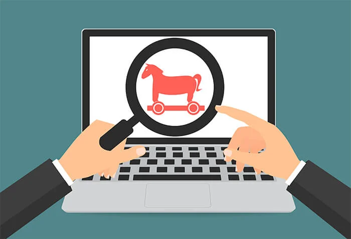

I trojan possono essere usati per prendere il completo controllo del nostro dispositivo, mobile o fisso, e svolgere quasi qualsiasi tipo di operazione
I malware trojan horse devono il loro nome al cavallo di Troia,si presenta come un file apparentemente utile,si cela, ad esempio, in un programma gratuito, in un email, oppure in videogiochi, applicazioni e film. Una volta installato, agisce spesso in silenzio, senza che il proprietario del computer noti la sua natura.
Innanzitutto bisogna avere un buon antivirus ed eseguire delle scansioni ma per non prenderlo conviene non scaricare allegati o file di dubbia provenienza.
